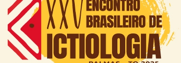

Venha se juntar a nós na emocionante 25ª edição do Encontro Brasileiro de Ictiologia, que será realizado na Universidade Federal do Tocantins, campus de Palmas, de 26 a 31 de janeiro de 2025. A cerimônia de abertura está marcada para acontecer no Centro de Convenções Arnaud Rodrigues.
Neste evento imperdível, especialistas de diversas áreas da ictiologia se reunirão para discutir a conservação dos ecossistemas aquáticos em meio à rápida degradação no Antropoceno. É a oportunidade perfeita para compartilhar ideias, conhecimentos e enfrentar juntos os desafios ambientais que enfrentamos.
O XXV EBI busca criar um ambiente acolhedor para a troca de experiências e diálogo entre professores, pesquisadores e estudantes de todo o Brasil interessados no fascinante campo da Ictiologia.
Não perca a chance de participar deste encontro enriquecedor! Junte-se a nós, compartilhe suas vivências e conhecimentos, e faça parte desta experiência única de aprendizado e colaboração. Estamos ansiosos para recebê-lo!
Acesse o site